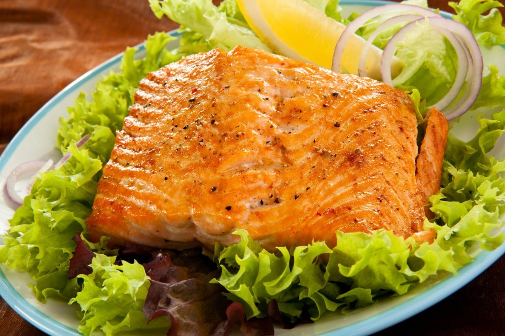

<ion-header>
    <ion-navbar>
        <ion-title>Cardápio Administrativo</ion-title>
        <ion-buttons end>
            <button ion-button icon-only (click)="cadastroPage()">
         <ion-icon name="add"></ion-icon>
       </button>
        </ion-buttons>
    </ion-navbar>

</ion-header>

<ion-content padding>

        <ion-card class="bg">
                <ion-list>
                        <ion-item *ngFor="let item of Item$ | async" (click)="selecionarNovoItem(item)">                      
                        <ion-thumbnail item-start>
                        
                      </ion-thumbnail>
                      <h2>{{item.nome}}</h2>
                      <h3>{{item.quantidade}} pessoa(s) - R$ {{item.preco}},00</h3>
                      <h3>{{item.descricao}}</h3>
                      <button ion-button clear item-end>Opções</button>
                    </ion-item>
                </ion-list>
            </ion-card>

</ion-content>